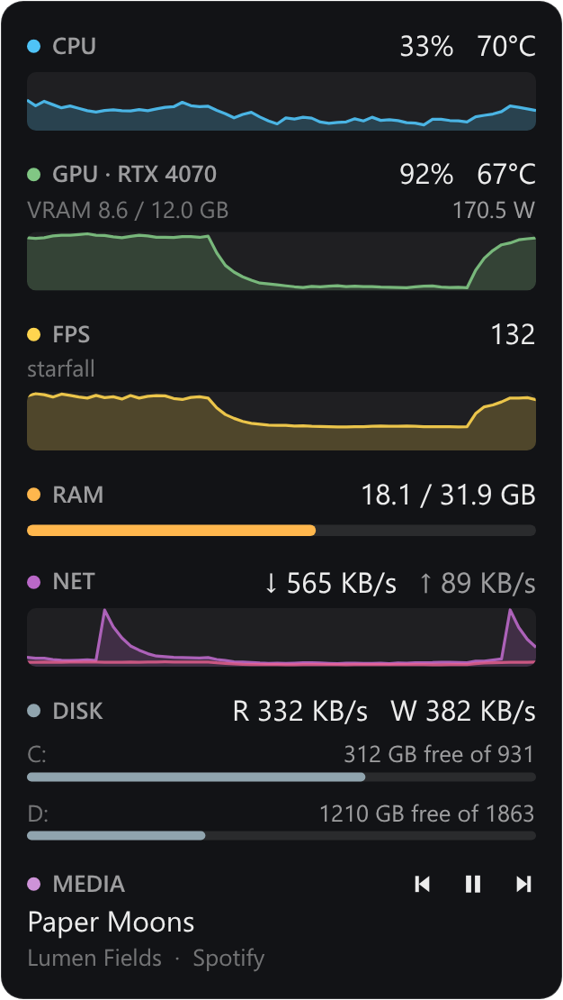
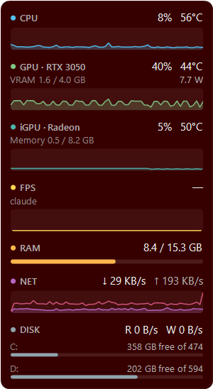
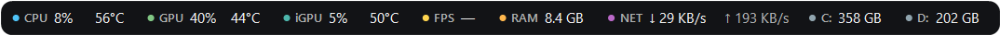
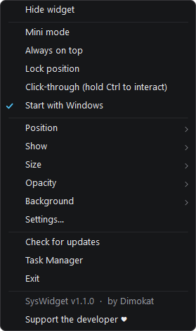
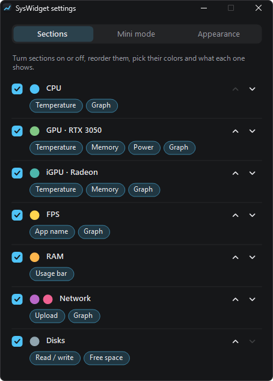

Your PC's vitals, always in sight.
SysWidget is a tiny desktop widget that shows CPU, every GPU, FPS, RAM, network, ping, disks, battery and what's playing. One small native exe: nothing to install alongside it, and it stays out of your way.
MIT license · no ads, no accounts, no tracking



Everything at a glance
Turn each section on or off, reorder them, pick their colors and what each one shows. Hidden sections aren't measured at all.
CPU
Load and temperature, with a history graph. Point at it to see which apps use the most.
Every GPU
NVIDIA, AMD and Intel, integrated ones too: load, memory, temperature and power, one section each.
FPS counter
Frames per second of the app in front, read from Windows' own graphics events. Nothing is injected into games.
RAM, disks, battery
Memory use, disk activity and free space, and on laptops the charge, time left and power draw.
Network & ping
Download and upload in MB/s or Mb/s, plus live latency to a server you pick, with graphs.
Now playing
What's playing in Spotify, Deezer, a browser or any player, with album art and play/pause and skip buttons.
Fits your setup
Full panel, one-line strip, or a slim column on the side of the screen.
Island mini mode
A rounded strip of stats. Point at one and it opens into a card with graphs, the busiest apps, or album art and media buttons.
Column on the side
Dock mini mode to the left or right edge and it becomes a column of compact tiles with icons.
In games, too
Shows over borderless games, and through RivaTuner's on-screen display even in exclusive fullscreen.
Game-aware
Switch to mini or hide while a fullscreen game or video is in front, and come back afterwards.
Alerts
A Windows notification when the CPU or GPU stays too hot, RAM is nearly full or a drive is running out of space.
One-click updates
When a new version is out, one click downloads it, checks it and installs it. Your settings stay.
Looks like Windows
Dark, light or your Windows accent color, adjustable size and opacity, snaps and docks to screen edges.
Stays out of the way
Click-through or hide under the cursor (hold Ctrl to use it), keyboard shortcuts, and it stops drawing while covered.
20 languages
Follows your Windows display language. Translations are plain text files anyone can improve on GitHub.


Install in a minute
Requires Windows 10 or 11. It uses the .NET Framework that comes with Windows, so there's nothing else to install.
- Download SysWidget-vX.Y.Z.zip from the latest release.
- Extract it and run Setup.exe from the SysWidget folder inside. If Windows SmartScreen says "Windows protected your PC", click More info → Run anyway.
- Keep Start with Windows checked: it also enables the FPS counter. Later updates are one click from the widget's menu.
Download
Latest release
Every release is built automatically by GitHub Actions from the source in the repository, and its SHA-256 checksums are listed in the release notes.
Signed and private
See the Code signing policy for how releases are signed, and the privacy policy for the few connections SysWidget makes (update checks, ping) and what they send.
Uninstall any time from Settings → Apps, or run Setup again and choose Uninstall.
Questions
Is it safe with anti-cheat?
Yes. SysWidget never injects anything into games. The FPS counter reads the same Windows graphics events that Microsoft's PresentMon uses, and the in-game display goes through RivaTuner, which draws it.
Why does it ask for admin rights?
Only the FPS counter needs them: Windows allows reading graphics events only for programs running as admin. With Start with Windows on, it starts through a scheduled task with highest privileges, so there's no prompt at sign-in.
Why does SmartScreen warn about it?
SmartScreen warns about new downloads until they build up reputation or are code-signed. All the source code and the automated build are public on GitHub.
Can I see it over a fullscreen game?
Over borderless or windowed fullscreen games, yes, with Always on top. For exclusive fullscreen, turn on Show in games through RivaTuner in Settings: it hands your stats to RivaTuner Statistics Server, which shows them in the game.
How much does it slow my PC down?
About 0.03% CPU. It reads Windows' own performance counters, measures only what's shown, slows down on battery and stops drawing while it's covered.
How do I uninstall it?
From Settings → Apps in Windows, or run Setup.exe again and choose Uninstall. You can also remove your settings there.
Code signing policy
Free code signing provided by SignPath.io, certificate by SignPath Foundation.
- Committers and reviewers
- Dimokat
- Approvers
- Dimokat
- Builds
- Release binaries are built only by the GitHub Actions release workflow from this repository's source, and each signing is approved by hand.
- Privacy
- SysWidget doesn't collect personal data. It only connects to other systems for features you can see and turn off; the privacy policy lists them.